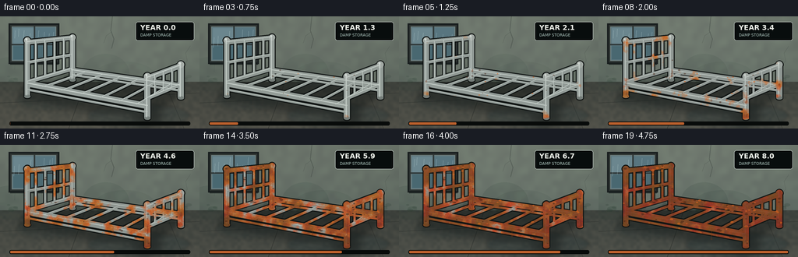
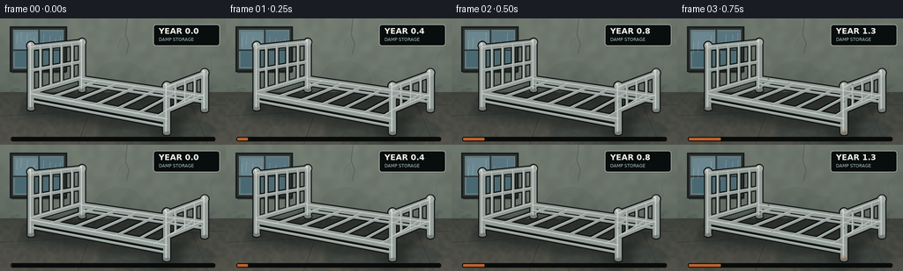

CODING AGENTS AS PIXEL WORLD MODELS
traex/GPT-5.6-Sol · phygen_160
点击播放 · 原生 RGB 像素
逐轮保存的候选
回放视频、检查图与代码变化。
每份候选均可单独播放。实际图片检查记录在下方工具轨迹中。
候选 01播放与检查图
点击播放 · 原生 RGB 像素


展开代码变化
--- 上一保存版本
+++ 本次保存版本
@@ -0,0 +1,280 @@
+from pathlib import Path
+import numpy as np
+from PIL import Image, ImageDraw, ImageFont, ImageFilter
+import artifact_io
+
+# Deterministic procedural illustration of a fixed-camera, multi-year oxidation timelapse.
+W, H, N = 256, 144, 20
+S = 4
+WS, HS = W*S, H*S
+ROOT = Path(__file__).resolve().parent
+rng = np.random.default_rng(160)
+
+
+def scaled(points):
+ return [(int(round(x*S)), int(round(y*S))) for x, y in points]
+
+
+def noise_layer(w, h, cell, seed, blur=0):
+ rr = np.random.default_rng(seed)
+ sw, sh = max(2, w//cell), max(2, h//cell)
+ a = (rr.random((sh, sw))*255).astype(np.uint8)
+ im = Image.fromarray(a).resize((w, h), Image.Resampling.BICUBIC)
+ if blur:
+ im = im.filter(ImageFilter.GaussianBlur(blur))
+ return np.asarray(im, dtype=np.float32)/255.0
+
+# Anchored material textures ensure the bed does not flicker as it ages.
+coarse = noise_layer(WS, HS, 52, 804, 7)
+medium = noise_layer(WS, HS, 17, 805, 2)
+fine = noise_layer(WS, HS, 5, 806, 0)
+wall_noise = noise_layer(WS, HS, 30, 901, 5)
+floor_noise = noise_layer(WS, HS, 15, 902, 2)
+Y, X = np.mgrid[0:HS, 0:WS]
+
+# Corrosion starts preferentially at welds, joints, feet and low damp areas.
+hot = np.zeros((HS, WS), dtype=np.float32)
+for x, y, r, strength in [
+ (35,84,10,.65),(93,69,9,.55),(189,107,10,.7),(232,88,9,.6),
+ (35,99,11,.85),(189,126,12,1.0),(232,101,10,.9),
+ (68,55,8,.35),(124,84,7,.35),(158,100,7,.4),(207,74,8,.45)
+]:
+ d2 = ((X-x*S)**2 + (Y-y*S)**2)/(r*S)**2
+ hot += strength*np.exp(-2.1*d2)
+hot = np.clip(hot, 0, 1)
+susceptibility = np.clip(.46*coarse + .29*medium + .10*fine + .42*hot, 0, 1)
+threshold = .12 + .96*(1.0-susceptibility)
+
+# Fixed speckles used for pitting and corrosion crumbs.
+speckles = [(rng.uniform(28,235), rng.uniform(25,131), rng.uniform(.25,1.0), rng.uniform(.15,1)) for _ in range(260)]
+
+
+def make_background(frame):
+ t = frame/(N-1)
+ arr = np.zeros((HS, WS, 3), dtype=np.float32)
+ horizon = int(84*S)
+ yy = np.linspace(0, 1, HS)[:, None]
+ xx = np.linspace(0, 1, WS)[None, :]
+ # Cold, damp plaster wall, faintly brighter around the rainy window.
+ vignette = ((xx-.48)**2 + (yy-.40)**2)
+ dampening = 5.5*t
+ wall_base = np.stack([
+ 92 + 17*(1-yy) + 8*wall_noise - 18*vignette,
+ 101 + 16*(1-yy) + 10*wall_noise - 17*vignette,
+ 94 + 14*(1-yy) + 7*wall_noise - 16*vignette
+ ], axis=2)
+ arr[:horizon] = wall_base[:horizon]
+ # Rough dark concrete floor receding to the wall.
+ fy = np.clip((Y-horizon)/(HS-horizon), 0, 1)
+ arr[:,:,0] = np.where(Y>=horizon, 58 + 17*fy + 11*floor_noise, arr[:,:,0])
+ arr[:,:,1] = np.where(Y>=horizon, 62 + 14*fy + 9*floor_noise, arr[:,:,1])
+ arr[:,:,2] = np.where(Y>=horizon, 57 + 12*fy + 7*floor_noise, arr[:,:,2])
+ # A little long-term darkening from persistent moisture.
+ arr[:,:,0] -= dampening*(Y/HS)
+ arr[:,:,1] -= dampening*.55*(Y/HS)
+ arr[:,:,2] -= dampening*.25*(Y/HS)
+ # Subtle exposure variation common to a long-running timelapse.
+ exposure = 1.0 + .018*np.sin(frame*1.7) + .008*np.cos(frame*.7)
+ arr = np.clip(arr*exposure, 0, 255).astype(np.uint8)
+ bg = Image.fromarray(arr, 'RGB')
+ d = ImageDraw.Draw(bg, 'RGBA')
+
+ # Water-damaged wall blooms and mold at floor level.
+ d.ellipse(scaled([(105,48),(166,100)]), fill=(45,64,55,22+int(15*t)))
+ d.ellipse(scaled([(121,58),(199,95)]), fill=(42,57,52,14+int(14*t)))
+ d.ellipse(scaled([(-20,52),(52,96)]), fill=(38,58,49,20+int(16*t)))
+ for k in range(28):
+ x = (k*37+11)%256
+ y = 77 + (k*19)%9
+ r = 2 + (k%5)
+ d.ellipse((int((x-r)*S),int((y-r/2)*S),int((x+r)*S),int((y+r/2)*S)),
+ fill=(28,48,38,24+int(22*t)))
+ # Old plaster cracks.
+ d.line(scaled([(144,0),(142,18),(146,29),(143,41)]), fill=(53,60,56,95), width=S)
+ d.line(scaled([(143,20),(136,25),(133,34)]), fill=(55,62,57,70), width=max(1,S//2))
+ d.line(scaled([(244,38),(238,47),(240,57),(233,66)]), fill=(49,57,52,55), width=max(1,S//2))
+
+ # Recessed, rain-streaked window.
+ d.rectangle((11*S,9*S,76*S,61*S), fill=(33,38,38,210), outline=(21,26,27,235), width=2*S)
+ d.rectangle((15*S,13*S,72*S,57*S), fill=(91,118,126,255), outline=(123,133,128,170), width=S)
+ # Cloudy panes.
+ d.rectangle((17*S,15*S,43*S,35*S), fill=(111,138,146,200))
+ d.rectangle((46*S,15*S,70*S,35*S), fill=(88,117,127,220))
+ d.rectangle((17*S,38*S,43*S,55*S), fill=(71,103,112,235))
+ d.rectangle((46*S,38*S,70*S,55*S), fill=(76,105,113,235))
+ d.line(scaled([(44,13),(44,57)]), fill=(41,48,47,220), width=2*S)
+ d.line(scaled([(15,36),(72,36)]), fill=(42,49,48,220), width=2*S)
+ # Rain shifts slightly frame-to-frame; the room and bed remain locked-off.
+ rr = np.random.default_rng(300 + frame)
+ for x in [19,24,31,39,49,56,63,68]:
+ ofs = rr.uniform(-1,1)
+ y0 = 16 + ((frame*3 + x*2)%12)
+ d.line(scaled([(x+ofs,y0),(x+ofs-.7,min(55,y0+10+frame%4))]), fill=(201,224,226,95), width=max(1,S//2))
+ # Condensation on the sill and wall below it.
+ d.line(scaled([(13,61),(75,61)]), fill=(24,31,30,190), width=2*S)
+ for x in [19,29,53,67]:
+ length = 3 + ((frame+x)%8)
+ d.line(scaled([(x,62),(x-.4,62+length)]), fill=(38,55,51,40+int(25*t)), width=max(1,S//2))
+
+ # Floor seams and puddles with weak sky reflections.
+ d.line(scaled([(0,111),(256,98)]), fill=(37,41,38,105), width=S)
+ d.line(scaled([(109,85),(88,144)]), fill=(38,42,39,115), width=S)
+ d.line(scaled([(211,85),(236,144)]), fill=(39,42,39,90), width=S)
+ puddle = Image.new('RGBA',(WS,HS),(0,0,0,0)); pd = ImageDraw.Draw(puddle,'RGBA')
+ pd.ellipse((111*S,112*S,244*S,143*S), fill=(33,49,51,72+int(18*t)))
+ pd.ellipse((20*S,96*S,107*S,121*S), fill=(39,55,55,47))
+ pd.line(scaled([(126,130),(219,121)]), fill=(127,151,149,25), width=S)
+ puddle = puddle.filter(ImageFilter.GaussianBlur(2*S))
+ bg = Image.alpha_composite(bg.convert('RGBA'), puddle)
+ return bg
+
+
+def line(draw, pts, fill, width):
+ draw.line(scaled(pts), fill=fill, width=max(1,int(width*S)), joint='curve')
+
+
+def render_bed(bg, frame):
+ t = frame/(N-1)
+ # Contact/cast shadow anchors the object on the damp floor.
+ sh = Image.new('RGBA',(WS,HS),(0,0,0,0)); sd=ImageDraw.Draw(sh,'RGBA')
+ sd.polygon(scaled([(31,91),(89,74),(237,96),(194,132),(25,108)]), fill=(9,13,12,96))
+ sd.ellipse((171*S,116*S,208*S,139*S), fill=(5,8,8,100))
+ sh=sh.filter(ImageFilter.GaussianBlur(5*S))
+ canvas=Image.alpha_composite(bg,sh)
+
+ # Dim reflections of the long rails in the puddle.
+ refl=Image.new('RGBA',(WS,HS),(0,0,0,0)); rd=ImageDraw.Draw(refl,'RGBA')
+ line(rd,[(49,111),(187,137)],(126,139,135,27),3)
+ line(rd,[(100,101),(228,118)],(115,128,126,20),2)
+ refl=refl.filter(ImageFilter.GaussianBlur(2*S))
+ canvas=Image.alpha_composite(canvas,refl)
+
+ outline=Image.new('RGBA',(WS,HS),(0,0,0,0)); od=ImageDraw.Draw(outline,'RGBA')
+ metal=Image.new('RGBA',(WS,HS),(0,0,0,0)); md=ImageDraw.Draw(metal,'RGBA')
+ mask=Image.new('L',(WS,HS),0); mm=ImageDraw.Draw(mask)
+ highlight=Image.new('RGBA',(WS,HS),(0,0,0,0)); hd=ImageDraw.Draw(highlight,'RGBA')
+
+ components=[]
+ # Each component is (points,width). Deliberate ordering keeps perspective readable.
+ # Headboard behind bed.
+ components += [
+ ([(35,102),(35,31)],7), ([(93,81),(93,27)],7),
+ ([(35,33),(93,27)],6), ([(35,59),(93,49)],4), ([(35,84),(93,67)],5),
+ ([(46,79),(46,57),(46,32)],3), ([(58,76),(58,55),(58,31)],3),
+ ([(70,72),(70,53),(70,30)],3), ([(82,69),(82,51),(82,29)],3),
+ # far side rail and under-rail
+ ([(92,69),(232,89)],7), ([(93,75),(231,95)],3),
+ ]
+ # Metal support slats across the empty frame.
+ for f in [.13,.29,.45,.61,.77,.91]:
+ far=(92+140*f,69+20*f); near=(35+154*f,87+29*f)
+ components.append(([far,near],3.4))
+ # near rail, strongest foreground edge
+ components += [
+ ([(35,86),(190,115)],8), ([(36,94),(190,123)],3),
+ # footboard in front
+ ([(189,130),(189,77)],8), ([(232,104),(232,62)],8),
+ ([(189,79),(232,63)],7), ([(189,105),(232,87)],5),
+ ([(199,101),(199,75)],3), ([(210,96),(210,71)],3), ([(221,91),(221,67)],3),
+ ]
+
+ # Rounded feet/caps and all tube layers.
+ for pts,w in components:
+ line(od,pts,(16,20,19,245),w+2.7)
+ line(md,pts,(153,162,158,255),w)
+ line(mm,pts,255,w)
+ # Cool specular ridge, offset toward top-left.
+ shifted=[(x-.65,y-.7) for x,y in pts]
+ line(hd,shifted,(226,235,229,155),max(.8,w*.20))
+ for x,y,r in [(35,31,4.2),(93,27,4.0),(189,77,4.5),(232,62,4.3)]:
+ od.ellipse(((x-r-1.2)*S,(y-r-1.2)*S,(x+r+1.2)*S,(y+r+1.2)*S),fill=(15,19,18,255))
+ md.ellipse(((x-r)*S,(y-r)*S,(x+r)*S,(y+r)*S),fill=(169,177,172,255))
+ mm.ellipse(((x-r)*S,(y-r)*S,(x+r)*S,(y+r)*S),fill=255)
+ hd.ellipse(((x-r*.55)*S,(y-r*.7)*S,(x+r*.05)*S,(y-r*.1)*S),fill=(238,244,239,175))
+ # Feet have flattened pads.
+ for x,y in [(35,102),(93,81),(189,130),(232,104)]:
+ od.ellipse(((x-5)*S,(y-2)*S,(x+5)*S,(y+4)*S),fill=(15,18,17,245))
+ md.ellipse(((x-4)*S,(y-1.5)*S,(x+4)*S,(y+2.8)*S),fill=(119,128,124,255))
+ mm.ellipse(((x-4)*S,(y-1.5)*S,(x+4)*S,(y+2.8)*S),fill=255)
+
+ canvas=Image.alpha_composite(canvas,outline)
+ canvas=Image.alpha_composite(canvas,metal)
+
+ # First a slow dull gray oxide film, then irregular orange/brown corrosion.
+ dull=np.zeros((HS,WS,4),dtype=np.uint8)
+ dull[:,:,:3]=np.array([78,81,75],dtype=np.uint8)
+ dull[:,:,3]=(np.asarray(mask,dtype=np.float32)*(.05+.20*t)).astype(np.uint8)
+ canvas=Image.alpha_composite(canvas,Image.fromarray(dull,'RGBA'))
+
+ age=(t**.82)*1.13
+ alpha=np.clip((age-threshold)*4.8,0,1)
+ alpha*=np.asarray(mask,dtype=np.float32)/255.0
+ # Variegated rust: fresh orange around advancing edges, deep brown in older patches.
+ mature=np.clip((age-threshold-.18)*4.2,0,1)
+ rust=np.zeros((HS,WS,4),dtype=np.uint8)
+ rust[:,:,0]=np.clip(177 + 34*medium - 65*mature,0,255).astype(np.uint8)
+ rust[:,:,1]=np.clip(76 + 35*coarse - 37*mature,0,255).astype(np.uint8)
+ rust[:,:,2]=np.clip(31 + 16*fine - 10*mature,0,255).astype(np.uint8)
+ rust[:,:,3]=(alpha*238).astype(np.uint8)
+ canvas=Image.alpha_composite(canvas,Image.fromarray(rust,'RGBA'))
+
+ # Specular metal survives only on areas not yet overtaken by rust.
+ hi=np.asarray(highlight).copy()
+ hi[:,:,3]=(hi[:,:,3].astype(np.float32)*(1-alpha*.88)*(1-.55*t)).astype(np.uint8)
+ canvas=Image.alpha_composite(canvas,Image.fromarray(hi,'RGBA'))
+
+ # Discrete pits, flaky scale and orange drips appear progressively.
+ details=Image.new('RGBA',(WS,HS),(0,0,0,0)); dd=ImageDraw.Draw(details,'RGBA')
+ mask_arr=np.asarray(mask)
+ count=int((t**1.25)*len(speckles))
+ for idx,(x,y,r,q) in enumerate(speckles[:count]):
+ xi,yi=int(x*S),int(y*S)
+ if 0<=xi<WS and 0<=yi<HS and mask_arr[yi,xi]>0:
+ col=(67,35,21,135) if q>.5 else (221,102,31,150)
+ rr=(.35+r*(.7+1.1*t))*S
+ dd.ellipse((xi-rr,yi-rr*.55,xi+rr,yi+rr*.55),fill=col)
+ if t>.22:
+ for j,(x,y) in enumerate([(35,82),(94,68),(189,104),(232,86),(145,106)]):
+ onset=.20+j*.055
+ if t>onset:
+ length=(t-onset)*22 + (j%3)*2
+ width=max(1,int(S*(1.05 if j<4 else .7)))
+ dd.line(scaled([(x,y),(x+.5*np.sin(j),y+length)]),fill=(135,57,24,150),width=width)
+ dd.ellipse(((x-1.2)*S,(y+length-1)*S,(x+1.2)*S,(y+length+1.4)*S),fill=(111,49,24,100))
+ canvas=Image.alpha_composite(canvas,details)
+ return canvas
+
+
+def add_overlay(im, frame):
+ t=frame/(N-1)
+ d=ImageDraw.Draw(im,'RGBA')
+ try:
+ font_b=ImageFont.truetype('/usr/share/fonts/truetype/dejavu/DejaVuSans-Bold.ttf',9*S)
+ font_s=ImageFont.truetype('/usr/share/fonts/truetype/dejavu/DejaVuSans.ttf',5*S)
+ except OSError:
+ font_b=font_s=ImageFont.load_default()
+ d.rounded_rectangle((174*S,7*S,249*S,31*S),radius=3*S,fill=(8,13,13,145),outline=(208,218,211,48),width=max(1,S//2))
+ year=8*t
+ d.text((180*S,9*S),f'YEAR {year:0.1f}',font=font_b,fill=(235,238,231,235),stroke_width=0)
+ d.text((180*S,21*S),'DAMP STORAGE',font=font_s,fill=(171,195,188,220))
+ # Timeline gives an unmistakable timelapse progression without obscuring the subject.
+ d.rounded_rectangle((12*S,135*S,244*S,140*S),radius=2*S,fill=(8,11,10,120))
+ d.rounded_rectangle((13*S,136*S,(13+230*t)*S,139*S),radius=S,fill=(189,97,45,210))
+ return im
+
+
+def generate():
+ out=[]
+ for i in range(N):
+ frame=make_background(i)
+ frame=render_bed(frame,i)
+ frame=add_overlay(frame,i)
+ frame=frame.convert('RGB').resize((W,H),Image.Resampling.LANCZOS)
+ out.append(np.asarray(frame,dtype=np.uint8))
+ return np.stack(out,axis=0)
+
+
+if __name__=='__main__':
+ frames=generate()
+ artifact_io.save(frames,ROOT)
+ print('saved',frames.shape,frames.dtype,'range',frames.min(),frames.max())
可观测工具轨迹
实际执行的命令与返回图片。
命令 1exit 0
/bin/bash -lc "cat prompt.txt && printf '\\n--- GENERATION_RULES.md ---\\n' && cat GENERATION_RULES.md"
命令 2exit 0
/bin/bash -lc "cat task_spec.json && printf '\\n--- files ---\\n' && find . -maxdepth 2 -type f -printf '%p\\n' | sort"
命令 3exit 0
/bin/bash -lc "command -v ffmpeg; command -v ffprobe; command -v python3; python3 - <<'PY' mods=['numpy','PIL','cv2','imageio','matplotlib'] for m in mods: try: x=__import__(m); print(m, getattr(x,'__version__','ok')) except Exception as e: print(m,'MISSING',e) PY"
命令 4exit 0
/bin/bash -lc "sed -n '1,240p' artifact_io.py"
命令 5exit 0
/bin/bash -lc "cat > generate.py <<'PY'
from pathlib import Path
import numpy as np
from PIL import Image, ImageDraw, ImageFont, ImageFilter
import artifact_io
# Deterministic procedural illustration of a fixed-camera, multi-year oxidation timelapse.
W, H, N = 256, 144, 20
S = 4
WS, HS = W*S, H*S
ROOT = Path(__file__).resolve().parent
rng = np.random.default_rng(160)
def scaled(points):
return [(int(round(x*S)), int(round(y*S))) for x, y in points]
def noise_layer(w, h, cell, seed, blur=0):
rr = np.random.default_rng(seed)
sw, sh = max(2, w//cell), max(2, h//cell)
a = (rr.random((sh, sw))*255).astype(np.uint8)
im = Image.fromarray(a).resize((w, h), Image.Resampling.BICUBIC)
if blur:
im = im.filter(ImageFilter.GaussianBlur(blur))
return np.asarray(im, dtype=np.float32)/255.0
# Anchored material textures ensure the bed does not flicker as it ages.
coarse = noise_layer(WS, HS, 52, 804, 7)
medium = noise_layer(WS, HS, 17, 805, 2)
fine = noise_layer(WS, HS, 5, 806, 0)
wall_noise = noise_layer(WS, HS, 30, 901, 5)
floor_noise = noise_layer(WS, HS, 15, 902, 2)
Y, X = np.mgrid[0:HS, 0:WS]
# Corrosion starts preferentially at welds, joints, feet and low damp areas.
hot = np.zeros((HS, WS), dtype=np.float32)
for x, y, r, strength in [
(35,84,10,.65),(93,69,9,.55),(189,107,10,.7),(232,88,9,.6),
(35,99,11,.85),(189,126,12,1.0),(232,101,10,.9),
(68,55,8,.35),(124,84,7,.35),(158,100,7,.4),(207,74,8,.45)
]:
d2 = ((X-x*S)**2 + (Y-y*S)**2)/(r*S)**2
hot += strength*np.exp(-2.1*d2)
hot = np.clip(hot, 0, 1)
susceptibility = np.clip(.46*coarse + .29*medium + .10*fine + .42*hot, 0, 1)
threshold = .12 + .96*(1.0-susceptibility)
# Fixed speckles used for pitting and corrosion crumbs.
speckles = [(rng.uniform(28,235), rng.uniform(25,131), rng.uniform(.25,1.0), rng.uniform(.15,1)) for _ in range(260)]
def make_background(frame):
t = frame/(N-1)
arr = np.zeros((HS, WS, 3), dtype=np.float32)
horizon = int(84*S)
yy = np.linspace(0, 1, HS)[:, None]
xx = np.linspace(0, 1, WS)[None, :]
# Cold, damp plaster wall, faintly brighter around the rainy window.
vignette = ((xx-.48)**2 + (yy-.40)**2)
dampening = 5.5*t
wall_base = np.stack([
92 + 17*(1-yy) + 8*wall_noise - 18*vignette,
101 + 16*(1-yy) + 10*wall_noise - 17*vignette,
94 + 14*(1-yy) + 7*wall_noise - 16*vignette
], axis=2)
arr[:horizon] = wall_base[:horizon]
# Rough dark concrete floor receding to the wall.
fy = np.clip((Y-horizon)/(HS-horizon), 0, 1)
arr[:,:,0] = np.where(Y>=horizon, 58 + 17*fy + 11*floor_noise, arr[:,:,0])
arr[:,:,1] = np.where(Y>=horizon, 62 + 14*fy + 9*floor_noise, arr[:,:,1])
arr[:,:,2] = np.where(Y>=horizon, 57 + 12*fy + 7*floor_noise, arr[:,:,2])
# A little long-term darkening from persistent moisture.
arr[:,:,0] -= dampening*(Y/HS)
arr[:,:,1] -= dampening*.55*(Y/HS)
arr[:,:,2] -= dampening*.25*(Y/HS)
# Subtle exposure variation common to a long-running timelapse.
exposure = 1.0 + .018*np.sin(frame*1.7) + .008*np.cos(frame*.7)
arr = np.clip(arr*exposure, 0, 255).astype(np.uint8)
bg = Image.fromarray(arr, 'RGB')
d = ImageDraw.Draw(bg, 'RGBA')
# Water-damaged wall blooms and mold at floor level.
d.ellipse(scaled([(105,48),(166,100)]), fill=(45,64,55,22+int(15*t)))
d.ellipse(scaled([(121,58),(199,95)]), fill=(42,57,52,14+int(14*t)))
d.ellipse(scaled([(-20,52),(52,96)]), fill=(38,58,49,20+int(16*t)))
for k in range(28):
x = (k*37+11)%256
y = 77 + (k*19)%9
r = 2 + (k%5)
d.ellipse((int((x-r)*S),int((y-r/2)*S),int((x+r)*S),int((y+r/2)*S)),
fill=(28,48,38,24+int(22*t)))
# Old plaster cracks.
d.line(scaled([(144,0),(142,18),(146,29),(143,41)]), fill=(53,60,56,95), width=S)
d.line(scaled([(143,20),(136,25),(133,34)]), fill=(55,62,57,70), width=max(1,S//2))
d.line(scaled([(244,38),(238,47),(240,57),(233,66)]), fill=(49,57,52,55), width=max(1,S//2))
# Recessed, rain-streaked window.
d.rectangle((11*S,9*S,76*S,61*S), fill=(33,38,38,210), outline=(21,26,27,235), width=2*S)
d.rectangle((15*S,13*S,72*S,57*S), fill=(91,118,126,255), outline=(123,133,128,170), width=S)
# Cloudy panes.
d.rectangle((17*S,15*S,43*S,35*S), fill=(111,138,146,200))
d.rectangle((46*S,15*S,70*S,35*S), fill=(88,117,127,220))
d.rectangle((17*S,38*S,43*S,55*S), fill=(71,103,112,235))
d.rectangle((46*S,38*S,70*S,55*S), fill=(76,105,113,235))
d.line(scaled([(44,13),(44,57)]), fill=(41,48,47,220), width=2*S)
d.line(scaled([(15,36),(72,36)]), fill=(42,49,48,220), width=2*S)
# Rain shifts slightly frame-to-frame; the room and bed remain locked-off.
rr = np.random.default_rng(300 + frame)
for x in [19,24,31,39,49,56,63,68]:
ofs = rr.uniform(-1,1)
y0 = 16 + ((frame*3 + x*2)%12)
d.line(scaled([(x+ofs,y0),(x+ofs-.7,min(55,y0+10+frame%4))]), fill=(201,224,226,95), width=max(1,S//2))
# Condensation on the sill and wall below it.
d.line(scaled([(13,61),(75,61)]), fill=(24,31,30,190), width=2*S)
for x in [19,29,53,67]:
length = 3 + ((frame+x)%8)
d.line(scaled([(x,62),(x-.4,62+length)]), fill=(38,55,51,40+int(25*t)), width=max(1,S//2))
# Floor seams and puddles with weak sky reflections.
d.line(scaled([(0,111),(256,98)]), fill=(37,41,38,105), width=S)
d.line(scaled([(109,85),(88,144)]), fill=(38,42,39,115), width=S)
d.line(scaled([(211,85),(236,144)]), fill=(39,42,39,90), width=S)
puddle = Image.new('RGBA',(WS,HS),(0,0,0,0)); pd = ImageDraw.Draw(puddle,'RGBA')
pd.ellipse((111*S,112*S,244*S,143*S), fill=(33,49,51,72+int(18*t)))
pd.ellipse((20*S,96*S,107*S,121*S), fill=(39,55,55,47))
pd.line(scaled([(126,130),(219,121)]), fill=(127,151,149,25), width=S)
puddle = puddle.filter(ImageFilter.GaussianBlur(2*S))
bg = Image.alpha_composite(bg.convert('RGBA'), puddle)
return bg
def line(draw, pts, fill, width):
draw.line(scaled(pts), fill=fill, width=max(1,int(width*S)), joint='curve')
def render_bed(bg, frame):
t = frame/(N-1)
# Contact/cast shadow anchors the object on the damp floor.
sh = Image.new('RGBA',(WS,HS),(0,0,0,0)); sd=ImageDraw.Draw(sh,'RGBA')
sd.polygon(scaled([(31,91),(89,74),(237,96),(194,132),(25,108)]), fill=(9,13,12,96))
sd.ellipse((171*S,116*S,208*S,139*S), fill=(5,8,8,100))
sh=sh.filter(ImageFilter.GaussianBlur(5*S))
canvas=Image.alpha_composite(bg,sh)
# Dim reflections of the long rails in the puddle.
refl=Image.new('RGBA',(WS,HS),(0,0,0,0)); rd=ImageDraw.Draw(refl,'RGBA')
line(rd,[(49,111),(187,137)],(126,139,135,27),3)
line(rd,[(100,101),(228,118)],(115,128,126,20),2)
refl=refl.filter(ImageFilter.GaussianBlur(2*S))
canvas=Image.alpha_composite(canvas,refl)
outline=Image.new('RGBA',(WS,HS),(0,0,0,0)); od=ImageDraw.Draw(outline,'RGBA')
metal=Image.new('RGBA',(WS,HS),(0,0,0,0)); md=ImageDraw.Draw(metal,'RGBA')
mask=Image.new('L',(WS,HS),0); mm=ImageDraw.Draw(mask)
highlight=Image.new('RGBA',(WS,HS),(0,0,0,0)); hd=ImageDraw.Draw(highlight,'RGBA')
components=[]
# Each component is (points,width). Deliberate ordering keeps perspective readable.
# Headboard behind bed.
components += [
([(35,102),(35,31)],7), ([(93,81),(93,27)],7),
([(35,33),(93,27)],6), ([(35,59),(93,49)],4), ([(35,84),(93,67)],5),
([(46,79),(46,57),(46,32)],3), ([(58,76),(58,55),(58,31)],3),
([(70,72),(70,53),(70,30)],3), ([(82,69),(82,51),(82,29)],3),
# far side rail and under-rail
([(92,69),(232,89)],7), ([(93,75),(231,95)],3),
]
# Metal support slats across the empty frame.
for f in [.13,.29,.45,.61,.77,.91]:
far=(92+140*f,69+20*f); near=(35+154*f,87+29*f)
components.append(([far,near],3.4))
# near rail, strongest foreground edge
components += [
([(35,86),(190,115)],8), ([(36,94),(190,123)],3),
# footboard in front
([(189,130),(189,77)],8), ([(232,104),(232,62)],8),
([(189,79),(232,63)],7), ([(189,105),(232,87)],5),
([(199,101),(199,75)],3), ([(210,96),(210,71)],3), ([(221,91),(221,67)],3),
]
# Rounded feet/caps and all tube layers.
for pts,w in components:
line(od,pts,(16,20,19,245),w+2.7)
line(md,pts,(153,162,158,255),w)
line(mm,pts,255,w)
# Cool specular ridge, offset toward top-left.
shifted=[(x-.65,y-.7) for x,y in pts]
line(hd,shifted,(226,235,229,155),max(.8,w*.20))
for x,y,r in [(35,31,4.2),(93,27,4.0),(189,77,4.5),(232,62,4.3)]:
od.ellipse(((x-r-1.2)*S,(y-r-1.2)*S,(x+r+1.2)*S,(y+r+1.2)*S),fill=(15,19,18,255))
md.ellipse(((x-r)*S,(y-r)*S,(x+r)*S,(y+r)*S),fill=(169,177,172,255))
mm.ellipse(((x-r)*S,(y-r)*S,(x+r)*S,(y+r)*S),fill=255)
hd.ellipse(((x-r*.55)*S,(y-r*.7)*S,(x+r*.05)*S,(y-r*.1)*S),fill=(238,244,239,175))
# Feet have flattened pads.
for x,y in [(35,102),(93,81),(189,130),(232,104)]:
od.ellipse(((x-5)*S,(y-2)*S,(x+5)*S,(y+4)*S),fill=(15,18,17,245))
md.ellipse(((x-4)*S,(y-1.5)*S,(x+4)*S,(y+2.8)*S),fill=(119,128,124,255))
mm.ellipse(((x-4)*S,(y-1.5)*S,(x+4)*S,(y+2.8)*S),fill=255)
canvas=Image.alpha_composite(canvas,outline)
canvas=Image.alpha_composite(canvas,metal)
# First a slow dull gray oxide film, then irregular orange/brown corrosion.
dull=np.zeros((HS,WS,4),dtype=np.uint8)
dull[:,:,:3]=np.array([78,81,75],dtype=np.uint8)
dull[:,:,3]=(np.asarray(mask,dtype=np.float32)*(.05+.20*t)).astype(np.uint8)
canvas=Image.alpha_composite(canvas,Image.fromarray(dull,'RGBA'))
age=(t**.82)*1.13
alpha=np.clip((age-threshold)*4.8,0,1)
alpha*=np.asarray(mask,dtype=np.float32)/255.0
# Variegated rust: fresh orange around advancing edges, deep brown in older patches.
mature=np.clip((age-threshold-.18)*4.2,0,1)
rust=np.zeros((HS,WS,4),dtype=np.uint8)
rust[:,:,0]=np.clip(177 + 34*medium - 65*mature,0,255).astype(np.uint8)
rust[:,:,1]=np.clip(76 + 35*coarse - 37*mature,0,255).astype(np.uint8)
rust[:,:,2]=np.clip(31 + 16*fine - 10*mature,0,255).astype(np.uint8)
rust[:,:,3]=(alpha*238).astype(np.uint8)
canvas=Image.alpha_composite(canvas,Image.fromarray(rust,'RGBA'))
# Specular metal survives only on areas not yet overtaken by rust.
hi=np.asarray(highlight).copy()
hi[:,:,3]=(hi[:,:,3].astype(np.float32)*(1-alpha*.88)*(1-.55*t)).astype(np.uint8)
canvas=Image.alpha_composite(canvas,Image.fromarray(hi,'RGBA'))
# Discrete pits, flaky scale and orange drips appear progressively.
details=Image.new('RGBA',(WS,HS),(0,0,0,0)); dd=ImageDraw.Draw(details,'RGBA')
mask_arr=np.asarray(mask)
count=int((t**1.25)*len(speckles))
for idx,(x,y,r,q) in enumerate(speckles[:count]):
xi,yi=int(x*S),int(y*S)
if 0<=xi<WS and 0<=yi<HS and mask_arr[yi,xi]>0:
col=(67,35,21,135) if q>.5 else (221,102,31,150)
rr=(.35+r*(.7+1.1*t))*S
dd.ellipse((xi-rr,yi-rr*.55,xi+rr,yi+rr*.55),fill=col)
if t>.22:
for j,(x,y) in enumerate([(35,82),(94,68),(189,104),(232,86),(145,106)]):
onset=.20+j*.055
if t>onset:
length=(t-onset)*22 + (j%3)*2
width=max(1,int(S*(1.05 if j<4 else .7)))
dd.line(scaled([(x,y),(x+.5*np.sin(j),y+length)]),fill=(135,57,24,150),width=width)
dd.ellipse(((x-1.2)*S,(y+length-1)*S,(x+1.2)*S,(y+length+1.4)*S),fill=(111,49,24,100))
canvas=Image.alpha_composite(canvas,details)
return canvas
def add_overlay(im, frame):
t=frame/(N-1)
d=ImageDraw.Draw(im,'RGBA')
try:
font_b=ImageFont.truetype('/usr/share/fonts/truetype/dejavu/DejaVuSans-Bold.ttf',9*S)
font_s=ImageFont.truetype('/usr/share/fonts/truetype/dejavu/DejaVuSans.ttf',5*S)
except OSError:
font_b=font_s=ImageFont.load_default()
d.rounded_rectangle((174*S,7*S,249*S,31*S),radius=3*S,fill=(8,13,13,145),outline=(208,218,211,48),width=max(1,S//2))
year=8*t
d.text((180*S,9*S),f'YEAR {year:0.1f}',font=font_b,fill=(235,238,231,235),stroke_width=0)
d.text((180*S,21*S),'DAMP STORAGE',font=font_s,fill=(171,195,188,220))
# Timeline gives an unmistakable timelapse progression without obscuring the subject.
d.rounded_rectangle((12*S,135*S,244*S,140*S),radius=2*S,fill=(8,11,10,120))
d.rounded_rectangle((13*S,136*S,(13+230*t)*S,139*S),radius=S,fill=(189,97,45,210))
return im
def generate():
out=[]
for i in range(N):
frame=make_background(i)
frame=render_bed(frame,i)
frame=add_overlay(frame,i)
frame=frame.convert('RGB').resize((W,H),Image.Resampling.LANCZOS)
out.append(np.asarray(frame,dtype=np.uint8))
return np.stack(out,axis=0)
if __name__=='__main__':
frames=generate()
artifact_io.save(frames,ROOT)
print('saved',frames.shape,frames.dtype,'range',frames.min(),frames.max())
PY
python3 generate.py"命令 6exit 0
/bin/bash -lc "python3 -m py_compile generate.py artifact_io.py && python3 - <<'PY'
import numpy as np, json
p=np.load('pixels.npz')['pixels']
s=json.load(open('task_spec.json'))
print('packed tensor',p.shape,p.dtype)
assert p.shape==(s['height'],s['width'],s['frames'])
assert len(list(__import__('pathlib').Path('frames').glob('*.png')))==20
print('validation OK')
PY"命令 7exit 0
/bin/bash -lc "python3 - <<'PY'
import numpy as np
from PIL import Image
f=np.stack([np.asarray(Image.open(f'frames/{i:02d}.png')) for i in range(20)])
print('shape/dtype',f.shape,f.dtype)
print('frame means',np.round(f.mean((1,2,3)),2).tolist())
print('adjacent MAD',np.round(np.abs(np.diff(f.astype(float),axis=0)).mean((1,2,3)),2).tolist())
# orange/rust pixel proxy in bed bounding area
roi=f[:,25:133,28:238]
r,g,b=roi[...,0],roi[...,1],roi[...,2]
rust=((r>85)&(r>g*1.35)&(g>b*1.25))
bright=((r>145)&(g>145)&(b>135)&(np.max(roi,axis=-1)-np.min(roi,axis=-1)<45))
print('rust counts',rust.sum((1,2)).tolist())
print('bright counts',bright.sum((1,2)).tolist())
print('first-last MAD',np.abs(f[-1].astype(float)-f[0]).mean())
print('unique pixels/frame',[len(np.unique(x.reshape(-1,3),axis=0)) for x in f])
PY
printf '\\nArtifacts:\\n'; find . -maxdepth 2 -type f -printf '%p %s bytes\\n' | sort | tail -30"保存候选 1 份；完成命令 7 次；可验证图片返回 0 张。原始 API 响应与完整日志保留在本地。